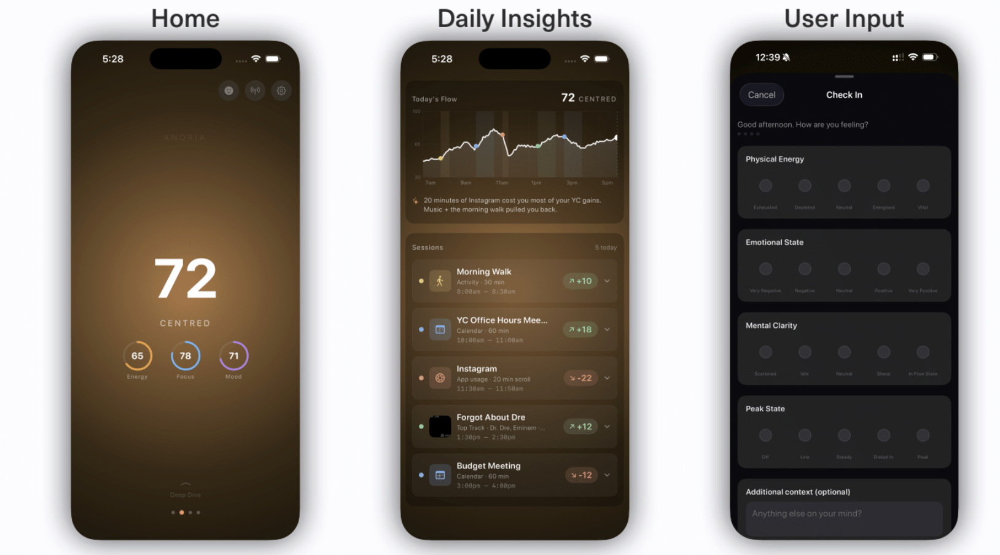
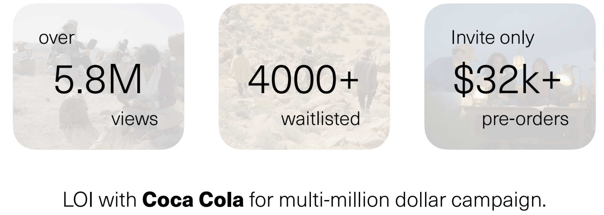
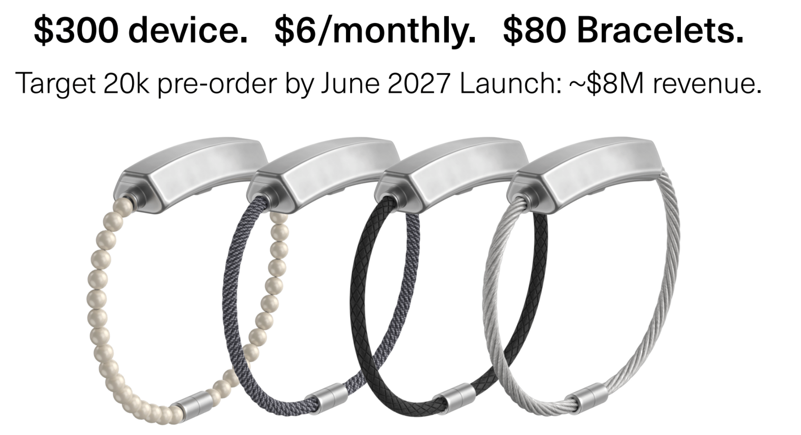
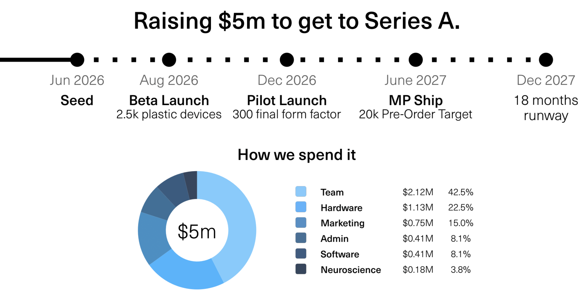

Seed Investment Memo · June 2026
Anoria: 情绪版 Whoop
一条融合麦克风、PPG 心率、EDA 与数字情境的手环，用 SOMI 推理模型生成实时 Flow Score，并通过灯光与触觉做全天情绪提示。
可以投，但只能按 optionality 定价。
这不是一笔“已验证情绪护城河”的重注，而是一张押团队、供应链增值和品类早期位置的小额战略票。最锋利的 upside 是 AI wearable 的下一层状态变量；最硬的风险是 always-on microphone 带来的隐私与合规接受度。
情绪是可穿戴的下一块空白
睡眠、恢复、负荷之后，用户真正缺的是“我现在处在什么状态、什么事件改变了状态”。Calm/Headspace 仍偏内容订阅，缺少连续状态层。
硬件与消费品能力密度高
前 Apple iPhone 产品设计、Meta Neural Band、F-16 EE、剑桥计算神经科学，5 人团队具备把产品造出来的基础能力。
核心验证还没过闸门
79% 是 within-person，小样本、早期数据。真正需要证明的是 cross-person cold-start：新用户开箱即用是否准。
从单点健康指标，升级为实时情绪状态。
Anoria 同时读取声音、心率、HRV、皮肤电与数字情境，提取约 150 个实时指标。产品输出 Energy、Mood、Focus，并合成为 Flow Score。

Microphone
Always-on 语音识别与说话人分离，读取对话语境、词汇丰富度、提问频率、pitch、tone、shimmer、jitter、register。
PPG
读取心率、HRV 与恢复状态，用于判断 arousal 与身体压力，但单独不足以识别情绪。
EDA
读取皮肤电，作为出汗代理信号，用来关联皮质醇和压力反应。
Digital Context
融合 App、日历、音乐、位置等上下文，把生理变化映射回具体事件，例如晨走、会议或 Instagram。
需求信号强，硬件仍很早。
成立约 3–3.5 个月，40 名 beta DAU 佩戴 V1，收入为 0。需求端有 launch 观看、waitlist 和预订，但供应链、定制电芯、结构固定和续航仍是关键执行风险。

能造出来，不等于已经证明。
创始人 Michael Belhassen 是前 Apple iPhone 硬件/产品设计，帝国理工机械工程，自称研究量化情绪 10 年。团队 5 名全职，近期计划扩到 9 人。
Michael Belhassen
CEO，前 Apple iPhone 硬件，Apple 期间每年约三个月驻深圳。
Akash Mahtani
创始 EE，曾为 F-16 战机设计硅芯片。
Saad Haq
创始产品设计工程师，Apple 与 Michael 共事，后在 Meta 主导 Meta Neural Band 设计。
Jack Clarkson
创始 ML，剑桥，计算神经科学背景。
Rebecca Laub
CMO，两次创业者，曾获法国顶级 VC 投资。
Next hires
in-house 神经科学家、全栈工程师、中国运营、硬件 UI/UX。
Oura 式硬件 + 订阅，但定位更像首饰。
$300 设备、$6/月订阅、$80 表带。主张与手表共戴，而不是取代手表；目标是当前不戴可穿戴的创意人群。

| 项目 | 当前数字 |
|---|---|
| 轮次 | $5M @ $40M cap SAFE，撑到 Series A |
| 单位经济 | $126 量产 BOM，$300 零售，58% 毛利 |
| 量产资金 | 由预订款覆盖，不动用本轮募资 |
| 资金用途 | 团队 42.5%，硬件 22.5%，营销 15%，行政 8.1%，软件 8.1%，神经科学 3.8% |
| GTM | education、线下 activation、DTC/零售/会员俱乐部/品牌合作 distribution |

大厂吞噬是核心赌注。
Apple、Amazon、Google 都可以把情绪推理塞进既有设备。Anoria 的反驳是现有玩家硬件迭代慢，而它可用数据飞轮先占品类。
| 公司 | 估值 / 状态 | 是什么 | Anoria 差异 | 对手优势 |
|---|---|---|---|---|
| Whoop | $10.1B | 无屏 performance 手环 | 直接测情绪，而非恢复/负荷代理 | 传感精度、量产、品牌已验证 |
| Oura | $11B | 睡眠/恢复智能戒指 | 首饰级情绪层 + 主动干预 | 品类龙头，累计售出 5.5M 戒指 |
| Friend | 约 $7–8M | AI 陪伴吊坠 | 有生理量化与数据飞轮 | 病毒级消费品牌 |
| Bee | $7M seed，被 Amazon 收购 | 记忆/助理手环 | 情绪是核心产品，不是附属功能 | Amazon 资本与分销 |
押的是“情绪状态 API”。
如果跨过准确率阈值，Anoria 不只是手环，而是设备、App 与用户行为之间的情绪情境层。
赛道 beta
AI 把智力商品化后，人的价值更转向创造力与连接，而二者都由情绪驱动。
公司 alpha
团队有硬件、神经科学、消费产品和供应链经验，单位经济从第一天就看起来可成立。
结构性不对称
$40M cap 对标 $10B+ 品类龙头，早期需求信号密集，且 IOSG 在深圳供应链上能即时增值。
最强差异化，也是最大软肋。
麦克风让情绪识别更可能成立，也让产品落入最敏感的隐私区间。Amazon Halo Tone 的关停和 Friend 的隐私反噬是不能轻描淡写的前车之鉴。
01 隐私与社会接受度
Always-on microphone 是整套产品里最受监管、最脆弱的部件。推理在云端、加密说法含糊、端侧推理推后，均未降低风险。
02 Cold-start 准确率
79% 是 within-person。真正要看新用户无校准开箱即用的 cross-person 准确率，以及几周 baseline 期间的留存。
03 量产执行
尚未选定代工厂，电池仍外置，固定结构未定型，还要在首饰尺寸内做到 always-on microphone + 24 小时续航。
04 GTM 与估值
$300 + $6/月 + $80 表带，面向未验证且有隐私包袱的新消费硬件。$40M cap 对 pre-validation 阶段并不便宜。
投前必须把四个问题问穿。
IC voting 可以推进，但 conviction 的提升来自方法学和执行路径，而不是更多 founder narrative。
Cross-person / cold-start
要求准确率方法学、样本量、标注方式、新用户无校准表现，以及 6 分钟快捷基线与几周 normal baseline 的差异。
Coca-Cola LOI
看原文与实际承诺内容：是营销兴趣、试点合作、预算承诺，还是只是品牌接触。
Privacy architecture
音频在哪里存储和处理；云端推理下 E2E encryption + 用户持密钥具体意味着什么；旁人同意和数据留存方案是什么。
Manufacturing plan
候选供应商、定制电芯交期、2,500 台 beta 与 20,000 台量产路径、认证与质量控制计划。